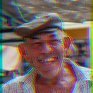

RGB Split

Hinahati ang red, green at blue channels: nananatili ang Center channel at ang dalawa pa ay lumilipat sa magkasalungat na direksyon kasunod ng Angle. Idinadagdag ng Light ang mga inilipat na kulay, pinapanatiling solid ang Dark, pinapanatili ng Mask ang kung saan nag-overlap ang tatlo, at ginagawang kasing-opaque ng kanilang kaliwanagan ng Luma ang mga fringe.
Inihihiwalay ng RGB Split ang pula, berde at asul na channel, tulad ng lens na may color fringing. Strength ang layo ng paggalaw nila, Angle ang direksyon. Ang Center ang channel na nananatili sa puwesto at ang Mode ang nagpapasya kung paano pinagsasama ang mga inilipat na channel: dinadagdag sila ng Light, pinananatiling solid ng Dark, pinapanatili lamang ng Mask ang kung saan nagkakapatong ang tatlo, at ginagawang kasing-opaque ng liwanag ng Luma ang mga fringe.
Mga Setting
| Setting | Uri | Saklaw | Default |
|---|---|---|---|
| Lakas | Numero | -8 hanggang 8 | 0.15 |
| Anggulo | Anggulo | -3600° hanggang 3600° | 0° |
| Center | Pagpipilian | R, G, B | G |
| Mode | Pagpipilian | Light, Dark, Mask, Luma | Light |